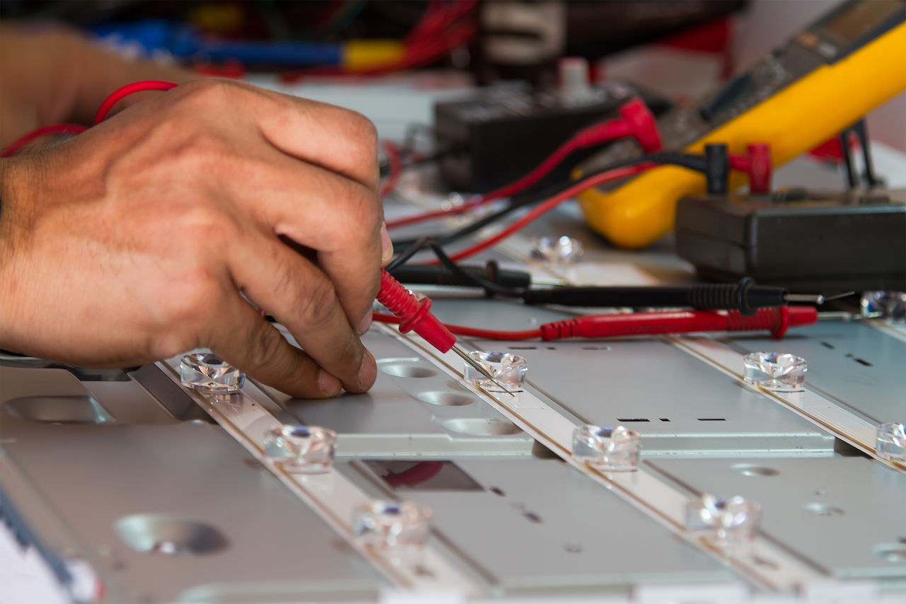

Servicio Técnico Televisores Samsung
Somos los mejores en soporte técnico Samsung en línea marrón. Muchos electrodomésticos pierden la garantía o por mal uso no los cubre. ¡No te preocupes, estamos para atenderte en cualquier situación!
Nuestro servicio técnico especializado en la reparación y mantenimiento de televisores cubre toda el área de Barranquilla y sus municipios cercanos, ofreciendo soluciones a domicilio. Nos dedicamos a resolver cualquier inconveniente relacionado con televisores mediante un servicio autorizado que utiliza repuestos originales adquiridos directamente de las marcas.
.jpg)
*El televisor enciende pero no muestra imagen, aunque sí emite sonido - Podemos resolver problemas como la presencia de líneas en la pantalla - daños en los LEDs - problemas con la Main Board o tarjetas - quedarse en el logo o cargando en aplicaciones - visión doble o morada - falta de encendido - daños por agua - problemas con la tarjeta del WiFi - visualización parcial en la pantalla - pérdida instantánea de imagen al encender - fallas en el botón de encendido - configuraciones incorrectas del control remoto (no proporcionamos controles).

En estos casos, existen dos alternativas: reemplazar la pantalla con una original, o adaptar una nueva pantalla. La recomendación sería optar por la sustitución de la pantalla o considerar la adquisición de un televisor nuevo en estas circunstancias.
RESEÑAS DE NUESTROS CLIENTE


“Un servicio diligente, confiable y eficaz que realiza la reparación de manera adecuada, en mi caso, con mi televisor“

“Mi televisor quedo en perfecto estado, gracias por el servicio“

“Buen servicio, el tecnico soluciono el problema de mi tv “
Somos una compañía independiente de Colombia dedicada a brindar servicios técnicos para la reparación, asistencia y cuidado de televisores.
Nuestra empresa no está asociada exclusivamente a una marca en particular, sino que ofrece servicios para múltiples marcas. No somos un centro de servicio autorizado de una empresa específica, sino que proporcionamos mantenimiento a televisores de todas las marcas disponibles en el mercado.
Los técnicos que conforman nuestro equipo poseen una trayectoria de más de una década en el ámbito de la reparación de televisores. Esto garantiza que tus dispositivos electrónicos están siendo atendidos por profesionales con amplia experiencia y conocimiento en el campo.
Lunes a Sabado
08:00 am – 05:00 pm